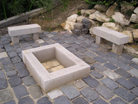

|
Bánya neve: Budakeszi 1. homokkõ bánya |
|
Leírás
Budakeszi és Páty határában találhaató bánya haszonkõzete kvarcos homokkõ. A bányában a kitermelés jelenleg szünetel.
A kõzet igen finoman szemcsés, szürke színû, kvarcos kötõanyagú, közepesen kemény és mérsékelten fagyálló. Kitermelése évszázadok óta folyamatos, korábban azonban leginkább köszörû- és kaszakövek készültek belõle. Építészeti és kertépítészeti felhasználása igen sokrétû. Burkolatok, kockakövek, tömblépcsõ fok, fedkövek, párkányok, kerti kisplasztikák készülhetnek belõle. Keménysége a hárshegyi-típusú homokkõhöz, vagy a tömött és édesvízi mészkõhöz képest alacsonyabb!
Hátránya a kõzetnek, hogy porózus szerkezet miatt könnyen szennyezõdik és nehezen tisztítható! E melett fokozottan figyelni kell a beépített darabok minõségére, nem minden esetben fagyálló, szerkezetében elõforduló mikrorepedések mentén szétvállhat. Erre fõként nagy tömbökben (pl. lépcsõfok) való felhasználásakor figyeljünk oda!
{kind=link}
Képek
Gatterrel vágott lapok |
Gatterrel vágott lapok |
 Gatterolt felület |
Lépcsõfok és kockakõ |
 Nemzeti Múzeum, tömb lépcsõfokok |
Balatonfüred, tömb lépcsõfok |
BBp. Barabás villa, tömb lépcsõfok |
{kind=link}
{kind=link}
{kind=link}
{kind=link}
{kind=link}
Magánkert, tömb lépcsõfok |
Korongvágott és hasított felületû kockakõ burkolat |
Balatonfüred, kockakõ burkolat |
Balatonfüred, kockakõ burkolat |
Balatonfüred |
 Magánkert |
 Mediterrán falburkolat |
{kind=link}
{kind=link}
{kind=link}
{kind=link}
{kind=link}
{kind=link}
 Soros mediterrán falburkolat |
 Mediterrán falburkolat |
Soros mediterrán falburkolat |
Sírkõ |
{kind=link}
{kind=link}
Linkek
link1
link2
link3